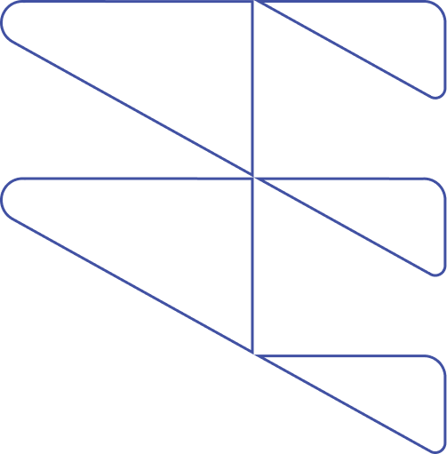
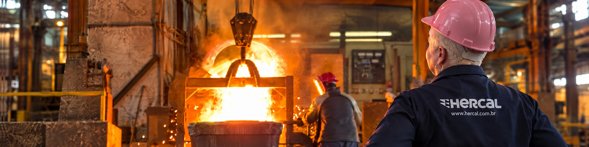
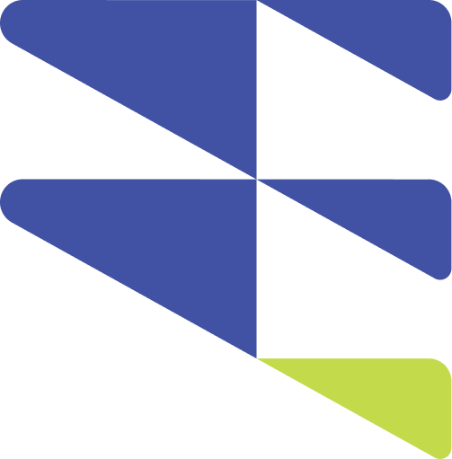
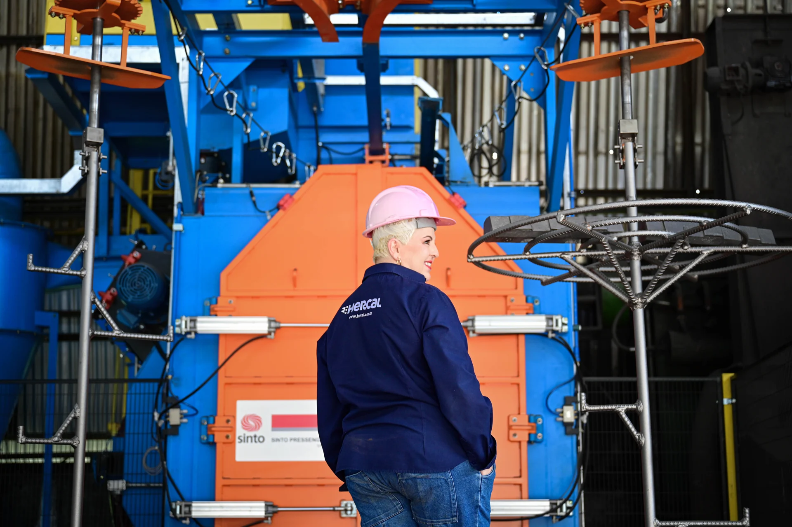
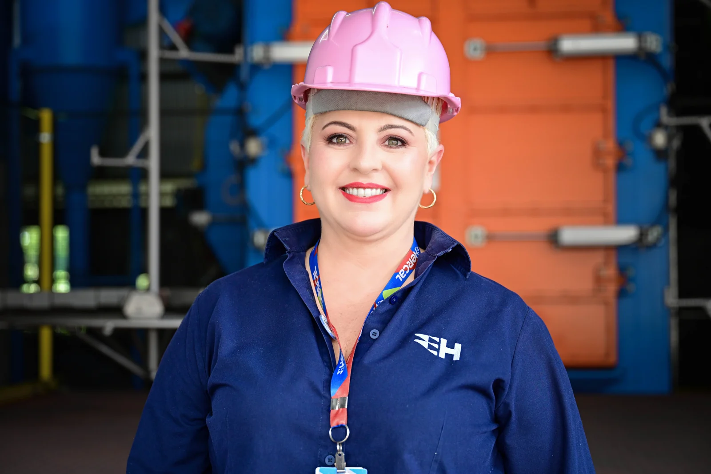
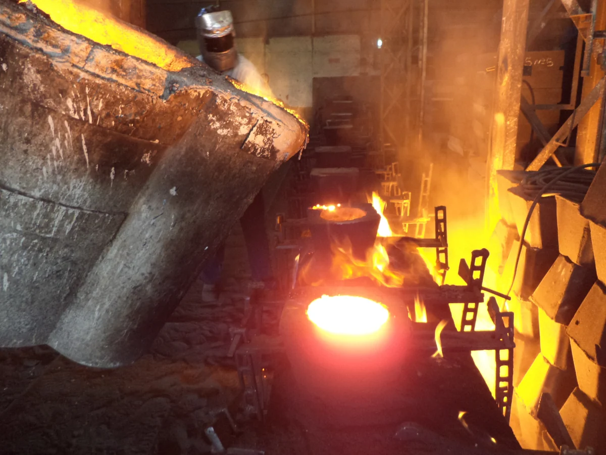
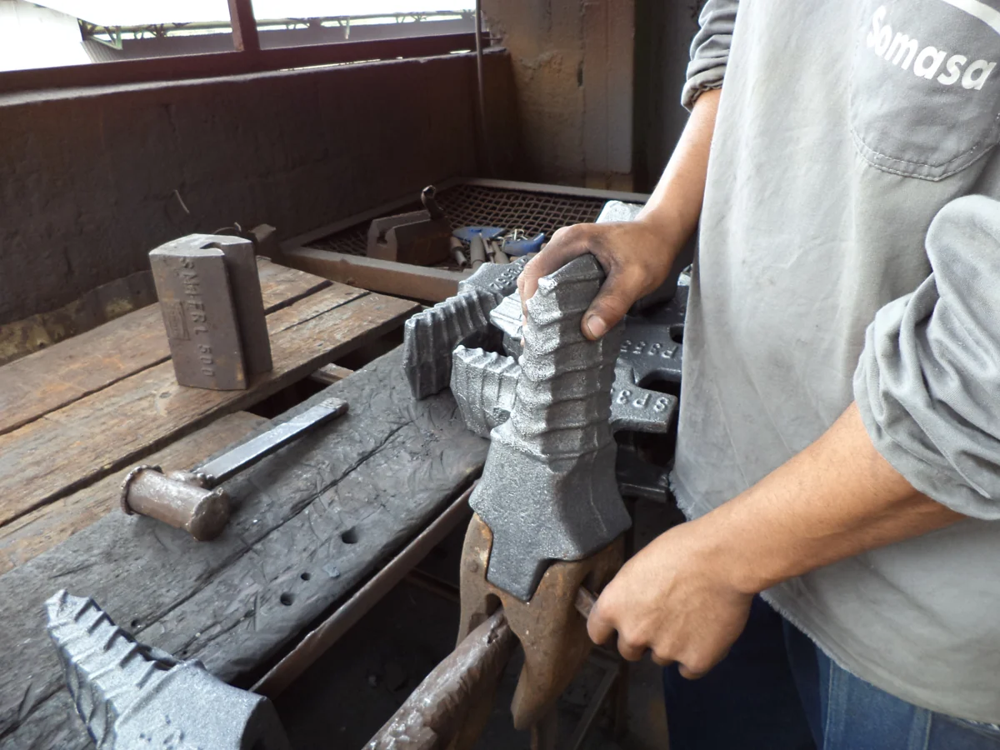
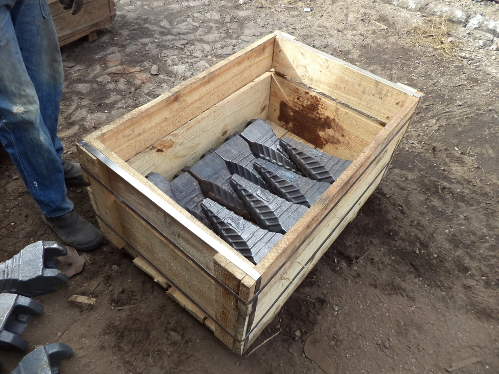
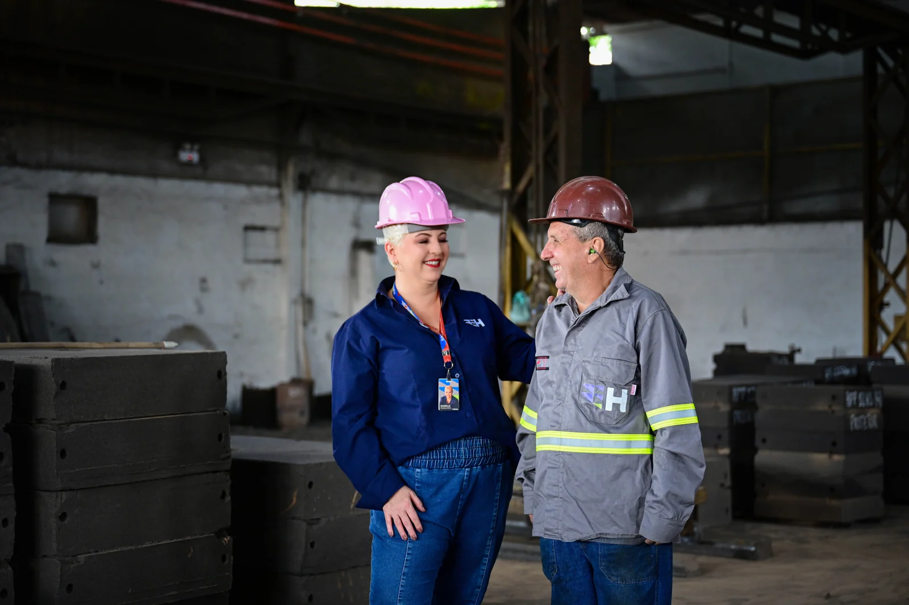

Peças fundidas em aço e ferro
Ferro branco, aço manganês e aços de baixa liga, com seleção de material conforme a aplicação.

HERCAL METALÚRGICA
Fundição de peças em aço e ferro branco para os desafios da sua indústria.


01 / QUEM SOMOS
Somos a Hercal. Unimos experiência em fundição, desenvolvimento de modelos e proximidade com quem está na operação.
Produzimos peças de reposição em aço e ferro branco para máquinas e equipamentos leves ou pesados. Desenvolvemos modelos próprios e trabalhamos a partir de desenhos e projetos de clientes, em produções seriadas ou exclusivas.
A escolha da liga e do modelo considera as condições de uso de cada peça. Conhecimento técnico e diálogo nos ajudam a construir soluções para os desafios da sua indústria.
Veja o que podemos desenvolver
ConhecimentoEngenhariaPessoas
02 / A HISTÓRIA DA DANI
Uma trajetória contada por
Danielle Caldeira Magalhães
À frente da Hercal Metalúrgica


A liga que move
as pessoas.
Eu não escolhi a fundição. A fundição apareceu na minha frente com uma planilha errada embaixo do braço.
Eu vinha do mercado financeiro. Depois montei consultoria própria e passei dez anos fazendo a mesma coisa. Entrava em uma empresa com problema de crédito, de caixa e de gestão, achava onde o dinheiro estava vazando e arrumava.
Um desses clientes era uma metalúrgica.
Entrei para olhar número e saí com areia no sapato.
Percebi que tem uma coisa que planilha nenhuma mostra. O barulho. O forno. O operador que sabe pelo som se a peça vai sair boa. O sincronismo entre molde, vazamento e tempo, que não tem sistema que resolva se a pessoa não estiver ali.
Passei dez anos vendo empresa de longe. Ali eu vi de perto.
E entendi uma coisa que me segurou. Gestão em indústria pesada mexe na vida das pessoas de um jeito que gestão em escritório não mexe.
Você mexe em turno, em segurança, em qualificação, em quanto a pessoa leva para casa. O efeito chega na cozinha da família.
Foi por isso que eu fiquei.
Acaso é o que te leva até a porta.
Escolha é o que faz você entrar.
03 / SOLUÇÕES E SEGMENTOS
Da escolha da liga à adaptação do modelo, o ponto de partida é a necessidade da sua operação.
Ferro branco, aço manganês e aços de baixa liga, com seleção de material conforme a aplicação.

Desenvolvimento e revisão de modelos para peças de reposição de equipamentos nacionais e importados.
Peças sob medida, unitárias ou em série, a partir dos requisitos técnicos de cada demanda.
POR DENTRO DA HERCAL



Explore os segmentos atendidos.
Peças para aplicações sujeitas a desgaste e impacto na operação mineral.
Chapas de desgaste · Barras de grelha · Pontas e suportes

04 / CULTURA E PESSOAS
A indústria acontece pelas mãos de quem está aqui.
Acreditamos em desenvolver profissionais cada vez mais capacitados e em aprender, crescer e superar desafios juntos. A evolução é colaborativa: valoriza pessoas e competências diferentes.
Proximidade, qualidade e confiabilidade são a base das nossas relações. Seguimos investindo em pessoas, processos e tecnologia para evoluir todos os dias.
VALORES QUE NOS MOVEM
05 / QUALIDADE
Qualidade começa com a compreensão da aplicação e acompanha o desenvolvimento da peça.
O trabalho técnico considera as condições de uso, os requisitos do projeto e a seleção de materiais. O objetivo é construir soluções adequadas a cada operação.
O texto integral da política vigente será incorporado após validação da Hercal. Este resumo editorial não substitui a política oficial.
Consultar política no site atual (abre em nova aba) ↗O site atual menciona ISO 9001:2015. Confirmar certificado, escopo e vigência antes da publicação. Nenhum selo foi aplicado ao protótipo.
Desenvolver peças fundidas com responsabilidade técnica e atenção às pessoas e às necessidades de cada operação.
Proposta editorial · validar texto oficialConstruir relações duradouras e avançar no desenvolvimento de soluções de fundição, com aprendizado e melhoria contínua.
Proposta editorial · validar texto oficial06 / VAMOS CONVERSAR
Conte para nossa equipe o que a sua operação precisa.
Segunda a sexta, das 9h às 17h
Apoio logístico
Av. Tancredo Neves, 8071 A
Divinópolis · Minas Gerais